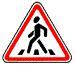

знак 1.23
Приложение 1 (дорожные знаки)
Закон Грузии «О дорожном движении» № 1830-რს, консолидированная редакция 25.06.2026 (Matsne, публикация 36). Юридическую силу имеет грузинский текст, русский — перевод. Источник: Matsne (рус.), Matsne (груз.).

Текст (рус., дословно)
1.23. «Пешеходный переход» – предупреждает о приближении к пешеходному переходу, обозначенному знаками 5.19.1 и 5.19.2 или (и) разметкой 1.14.1–1.14.3.
Официальный текст (груз.)
1.23. „ქვეითთა გადასასვლელი“ − იძლევა გაფრთხილებას 5.19.1 და 5.19.2 ნიშნებით ან/და 1.14.1–1.14.3 მონიშვნებით აღნიშნულ ქვეითთა გადასასვლელთან მიახლოების თაობაზე.
Где это в курсе
Уроки
- Выпуск 4. Пешеходный переход, железнодорожный переезд, населённый пункт — разбирает, ссылается
Понятия курса
- Пешеходный переход (определение, знаки 5.19, 1.23, разметка 1.14) — вводится в выпуске 4
Билеты, которые на неё ссылаются (3)
По ссылкам на закон в пояснениях базы (с учётом наших уточнений онтологии).
Ссылаются в законе
Постоянная ссылка: norm/sign-1.23.html